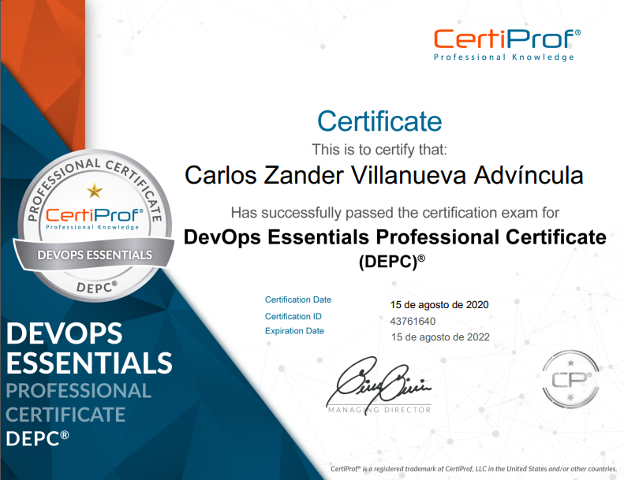
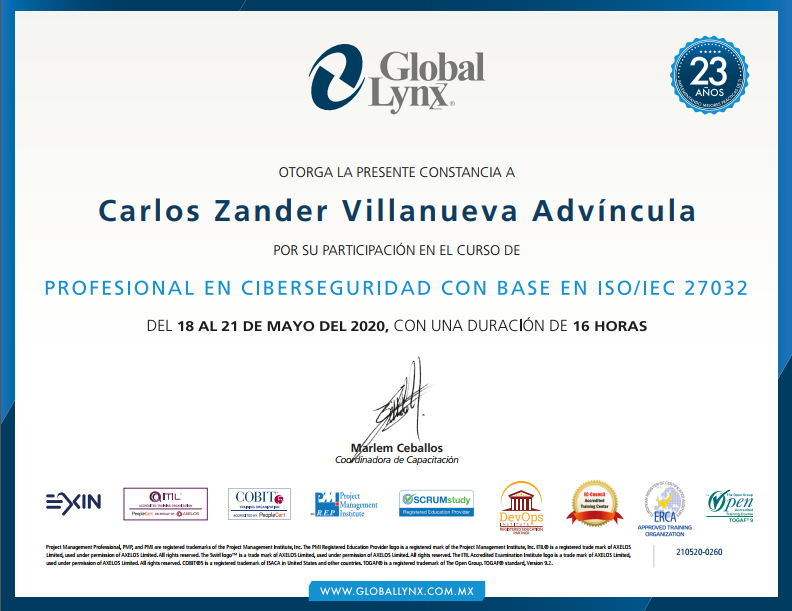

Profesional técnico egresado de la carrera de Computación e Informática, con una experiencia de más de 3 años en diseño y despliegue de redes de telecomunicación empresariales CISCO, HPE y Mikrotik. Sólidos conocimientos en Cloud Computing, Infraestructura de servidores, Seguridad Informática, manejo de metodologías Ágiles, MS Office y del idioma inglés.
Carlos Zander Villanueva Advíncula
Seguridad y Auditoría Informática
Certificados
Seguridad y Auditoría Informática
{kind=link}
{kind=link}
{kind=link}
{kind=link}
SCRUM
Scrum es un proceso en el que se aplican de manera regular un conjunto de buenas prácticas para trabajar colaborativamente, en equipo, y obtener el mejor resultado posible de un proyecto. Estas prácticas se apoyan unas a otras y su selección tiene origen en un estudio de la manera de trabajar de equipos altamente productivos.

DevOps Essentials Professional Certificate (DEPCP)
DevOps es más que una tecnología o un conjunto de herramientas. DevOps se trata de personas, procesos y las herramientas adecuadas para hacer que el ciclo de vida de su aplicación sea más rápido y predecible. DevOps Essentials explora el cambio en la mentalidad y el proceso de los enfoques tradicionales, incluso más, si la organización aún no está adoptando los principios Agile. La organización debe adoptar un enfoque colaborativo que reúna a todos los involucrados en la entrega, no solo al Desarrollo y las Operaciones. Esta certificación proporciona una descripción general de los conceptos básicos de DevOps.

Profesional en Ciberseguridad con base en ISO-IEC 27032
El estándar o normativa ISO/IEC 27032:2012 "Tecnologías de la información - Técnicas de seguridad - Directrices para la Ciberseguridad” abarca el ámbito de la Ciberseguridad, y ha sido publicado en 2012 por ISO